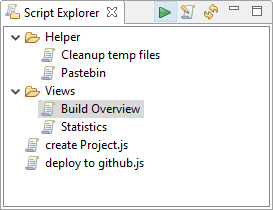

User scripts for daily usage and for extending the UI are displayed in the Script Explorer view. It allows to categorize these scripts and to keep them available for quick access.
Scripts can be viewed, edited and launched directly from the view. Further scripts selected in the view are connected to the Properties view, where users may alter some properties, even when the scripts are hosted on a read-only location.
Run the currently selected script.
Open the source of the selected script in an editor.
Refresh all script locations and parse for new/changed scripts.